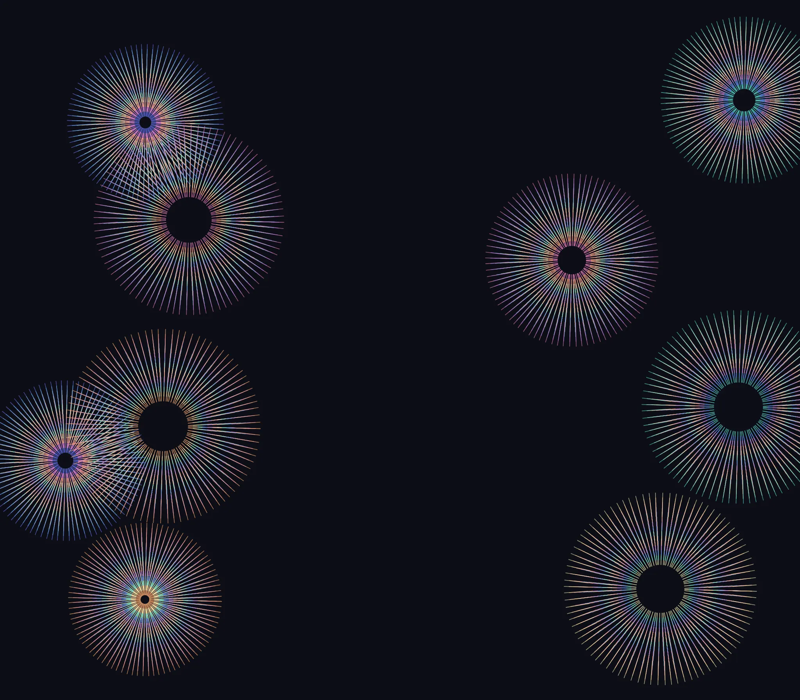
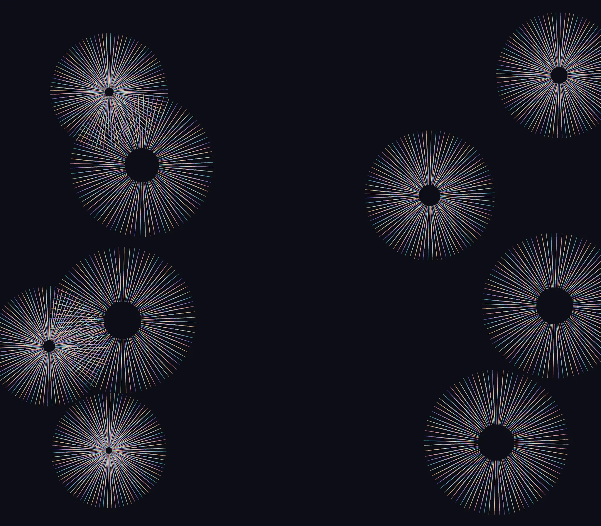
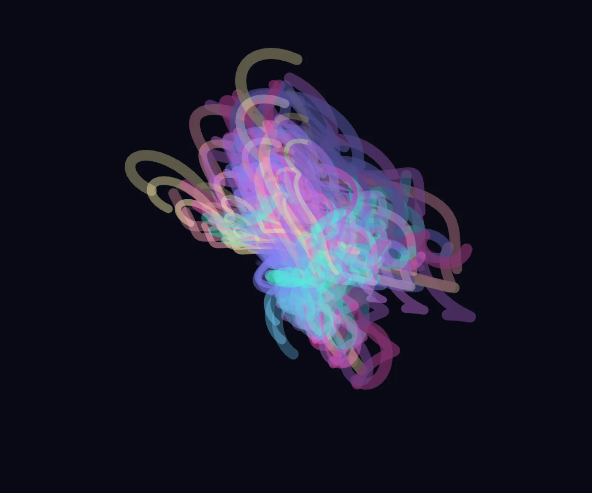
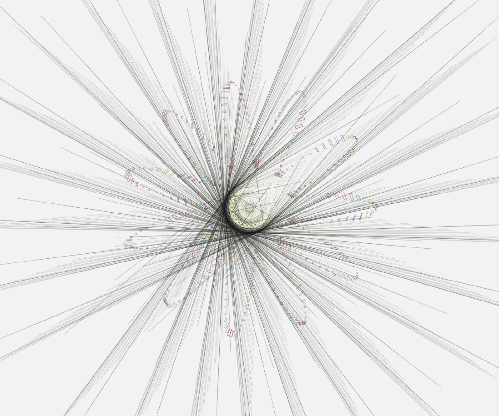
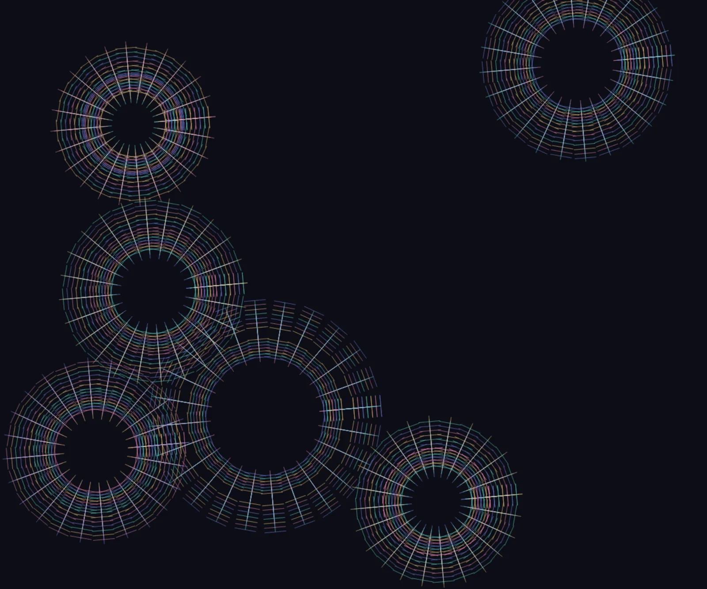
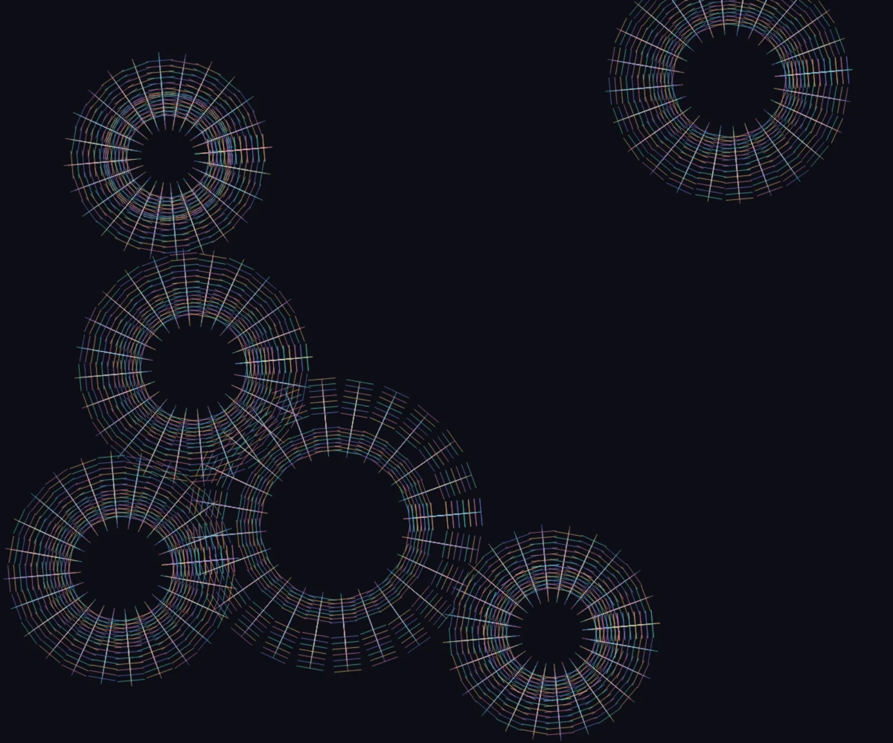

An algebra of painted shapes
One population.
Seven states.
Follow Life Without Its Zeros from a simulation grid to a field of spline normals. Each stage is a saved result of the native tools.
Game of Life · Main visual
0 · Source
G
The native protofield simulation produces a binary grid. White cells are absent states; dark cells are occupied states.
3,300 artwork shapes (background excluded)
Open this SVGSave SVGFinal settings
{kind=link}
Read composition from right to left. Use the slider's arrow keys to move one step.
Continue the experiment
Open the living version.
Start Game of Life with this study's saved parameters, property rules, and flows. Explore the controls and let the next composition evolve.
The source app opens paused with the saved settings. Use its playback controls when you want to animate or continue the simulation. The SVG preserves the exact exported frame.
Order is part of the image
Color, then normals.
Normals, then color.
The source, parameters, and final geometry are identical. Swapping two operators changes which colors belong to whole source boundaries and which belong to individual marks. Here, 7,049 of 8,811 normal-line stroke assignments change.

Color before normals
A ∘ N ∘ C ∘ P (G)
Save SVG{kind=link}

Normals before color
A ∘ C ∘ N ∘ P (G)
Save SVG{kind=link}
algebraCOEF Wild · 17 new apps
One app. One experiment.
Seventeen different directions.
Each app gets a new algebraic composition: signed echoes, logarithmic scale jumps, overshooting splines, tilted vectors, opacity recurrences, reflections, and transparent depth layers. None of these seventeen apps appeared in the first coefficient batch.
| New coefficient | What it changes | An example |
|---|---|---|
| Logarithmic spacing | Equal scale ratios between echoes | 0.125 to 2.2 |
| Extrapolated tension τ | Overshoot or reverse spline tangents | -4.5 to 3.3 |
| Vector angle φ | Turn normals and tangents around their sample points | 137.507 degrees |
| Signed scale λ | Invert a path or polygon around its own center | -1.618 to 2.618 |
| Opacity recurrence η | Propagate fading through ordered echoes | Backward multiplication by 0.72 |
| Fourier placement ω | Generate rotating rectangles along a parametric register | 11 lobes, 17/7 size oscillations |
The first three capabilities are editable in the native Effects tools and saved with each Flow. These are individual experiments across different sources; the original controlled pairs remain below.

Projective Anti-Matter
Boys Surface Model
Save SVG{kind=link}

Needle Frequency Altar
Kakeya / Besicovitch Needle (Perron-Tree Approx, Rectangles)
Save SVG{kind=link}
Explore the 17 Wild studiesExpanded coefficients & all compositions
algebraCOEF · original 24 paired compositions
Coefficients change the marks.
Order changes their color.
Six visual apps, two coefficient profiles, and twelve controlled pairs, rerun with randomized starting settings. Grid spacing, colony growth, curve frequencies, and grass structure now vary across the batch; each pair shares its own recorded seed and sampled parameters. Each study creates scaled echoes, applies normal and tangent passes to separate source families, then repeats a small rotation and zoom. Color moves from before both spline passes to after them.
Ar ∘ N2[β] ∘ N1[α] ∘ C ∘ E[λ,k] ∘ B (G(Rseed(p), s, f))
Ar ∘ C ∘ N2[β] ∘ N1[α] ∘ E[λ,k] ∘ B (G(Rseed(p), s, f))
Read right to left. R randomizes starting parameters before G draws the source; s is the source seed and f is the frame count. α and β multiply vector length; λ sets the smallest echo; k counts echoes; r counts affine repetitions. B prepares the source. N1 samples even siblings, and N2 samples the remaining sources. Each formula preserves the same coefficients within its pair.
| Profile | α | β | λ | k | r |
|---|---|---|---|---|---|
| A | 0.65 | 1.35 | 0.62 | 2 | 2 |
| B | 1.45 | 0.80 | 0.83 | 3 | 3 |
All twelve pairs preserve geometry and change stroke assignments. In the Halo B pair below, 2,268 of 3,150 line strokes change when color moves. The native shapes, coefficients, and final transform are identical.

Color the source families
Save SVG{kind=link}

Color the resulting marks
Save SVG{kind=link}
Explore all 41 algebraCOEF studiesCoefficient definitions & measurements
The rules behind the images
Flow algebra
A cell can become a circle; a circle can become a sampled boundary; that boundary can become a family of normal vectors. The order of those operations changes what the image represents.
Save the formal notesBrowse the studies
Read the operator definitions, measured laws, and all 26 compositions
This batch treats an SVG as an ordered collection of geometric objects with attributes and ancestry. A cell can become a circle; a circle can become a sampled boundary; that boundary can become a family of normal vectors. Color can record the object before the change or enumerate the fragments afterward. Empty space can be created by deleting a whole selected family.
The collection contains 26 new studies: 18 main visuals and 8 math visuals, including 13 monochrome works. The interactive algebra lab shows saved intermediate stages and the controlled order comparison. Open the viewer to filter the collection, or open the SVG links below. The original and extreme batches remain available.
Read a composition from right to left
Let G(p, s, k) be the native app output at parameters p, harness seed s, and recorded animation-frame count k. Here k counts simulated requestAnimationFrame time steps; it is not necessarily the number of cellular-automaton generations or solver iterations. A typical study is
I = A o C o N o Q o D (G(p, s, k)).
This means: generate the native image, delete a selected family, convert another selection, replace those shapes with sampled vectors, assign color, and finally make a small affine change. The stored flow stages list execution order from first to last; the formula writes mathematical composition in the opposite direction.
| Operator | Meaning | Actual implementation |
|---|---|---|
| D | Select and delete objects by their attributes, such as one fill-color family. | Native Property Ops rule with apply: { "$delete": true }; applied as a prefix by the export bridge. |
| Q | Change geometric representation: rectangle to circle, path to sampled polygon, and related supported conversions. | Native convert effect. Sampling and closure can change the geometry. |
| N | Sample a spline through source points, then emit short vectors in the chosen normal, tangent, or vertical direction. | Native splineLines effect; each selected source is replaced by a group of lines. |
| C | Reassign color by original color, luminance, size, or element order. | Native color effect. The selector and mapping mode determine what color means. |
| A | Apply a small affine change to the resulting composition. | A final native transform stage; these studies favor restrained shears, rotations, and scaling. |
| P | Change fill or stroke without deleting the SVG object. | Native paint effect. A shape painted with none remains in the geometry and can be selected later. |
| E | Replace selected shapes with a finite family of scaled copies. | Native scale effect. Its copy count is part of the recipe. |
For a normal sample at point x, the local unit tangent t = (tx, ty) gives a normal n = (-ty, tx). The emitted segment joins x - h n / 2 to x + h n / 2, where h is the configured line height times its scale. This is a finite geometric sampling operation, not an exact symbolic derivative of the original simulation.
Order changes the result
- C before N gives a source its color before subdivision, so its descendants can inherit a common identity. C after N, using element order, can color the newly emitted vectors individually.
- D before C can remove the original white cell population. Recoloring first can destroy that selector meaning, so the same deletion afterward need not remove the same objects.
- N after Q uses the converted boundary. A circle converted to its bounding rectangle has four corners; its sampled normal field differs from the circular one.
- A before N changes the geometry from which normals are calculated. A after N transforms already constructed vectors; an anisotropic affine change generally does not preserve perpendicularity.
- Positional selectors such as
:nth-of-type(3n)act on the current SVG tree. Deleting or replacing siblings changes what a later positional selector matches.
In general, N o Q != Q o N, and C o N != N o C when their selection or color rules differ. These are compositional claims about concrete operations, not a claim that every pair fails to commute. A deletion based on a stable color or identifier is idempotent if nothing changes between applications; a positional deletion can expose a different set of siblings on its second pass.
A measured witness: C before N versus N before C
The interactive comparison displays both saved SVGs. The following measurements were made during the export review.
Color Before Normals: Membrane Memory and Normals Before Color: Discrete Spectrum use the same native source version, complete parameters, seed 925490, frame count 75, canvas, background, preparatory paint, color configuration, normal-sampling configuration, and final affine. Only the positions of C and N differ.
In this guide's notation the pair is A o N o C o P (G) versus A o C o N o P (G). The pair recipe uses local names Q for the common preparatory paint and T for the common affine; those are P and A here, so Q retains its conversion meaning in the main legend.
| Measured property | Result |
|---|---|
| Ordered SVG geometry, transforms, and stroke widths | Exactly equal; SHA-256 2d65558a72fb9daced6a3c759d4acd592753f1f3901cbdaa3b57ecf3ff2d720f |
| Generated normal lines | 8,811 in each SVG |
| Normal-line stroke assignments changed | 7,049 of 8,811 (80.0023%) |
| Preview RGB RMSE | 10.924699 on the 0-255 channel scale |
| Preview pixels with any RGB difference | 62,606 of 358,400 (17.4682%) |
| Pixels with a channel difference greater than 8 | 12.5326% |
Geometry equality was checked on the ordered SVG tree after excluding metadata, identifiers, run-specific data, style strings, and paint attributes; geometric attributes, including coordinates, transforms, and stroke widths, were retained. The exported SVGs contain no stylesheet. Stroke assignments were resolved through inline paint, explicit attributes, and ancestor inheritance. Pixel measurements use the two saved 640 x 560 previews directly, with no alignment, resizing, or image correction.
This is an observed noncommutation witness for the selected state: equal geometry and different paint. The word "commutator" in recipe labels refers to this order comparison, not to the invertible group expression C N C^-1 N^-1. Conversion, deletion, and spline replacement are not assumed invertible.
Native tools and the export adapter
Property Ops and Tool Flows are separate repository tools. The current Tool Flow engine recognizes effect and transform stages; it does not have a native delete stage. Recipes therefore place deletion rules in top-level propOps. The export bridge calls the real applyPropOpsToSubtree implementation before running the ordered flow stages and preserves the rules in saved state. A property entry in the recorded statistics describes this prefix; it is not an invented native Flow effect.
A literal deletion rule used by the Game of Life studies is:
{
"kind": "propRule",
"selector": { "rect": { "fill": { "eq": "#ffffff" } } },
"apply": { "$delete": true }
}Property selectors match explicit attributes or inline style properties. They support exact values and scalar or RGB ranges. They do not interpret CSS selectors or inherited computed paint. The conversion, spline, paint, and color tools have their own CSS selector fields. The export harness normalizes native HSL attributes to RGB before applying the saved color predicates.
Each native N operation tags its replacement groups and lines. The implementation skips geometry already inside a generated spline group, so a later N stage normally targets another eligible source family rather than recursively growing an unlimited brush. The exact selected count and generated count are retained in the export record.
For these exports, property selection and geometry/color effects run before the final affine stage. This keeps the saved ancestry and transformed output consistent with the native transform runtime. A recipe that reverses the order would need its own deliberate export handling.
A second measured law: stable deletion and erased selection
The export review executed the repository's actual applyPropOpsToSubtree and runEffectsFromUI functions on the saved source stage. It excludes the one full-canvas presentation rectangle, leaving 3,300 simulation cells.
For D, the exact white-fill predicate removes 2,421 cells. Counts are 3,300 -> 879 -> 879 for G, D(G), and D(D(G)). The entire remaining XML serialization after the first deletion is exactly equal to that after the second: D(D(G)) = D(G) for this source and this stable predicate.
A second comparison uses the native paint effect to set every remaining rectangle's fill to black. Calling that constant recoloring C, D(C(G)) retains all 3,300 cells, while C(D(G)) retains 879. Painting first leaves zero matches for the original white-fill predicate. The 2,421-cell difference is a measured selection-order effect, not a geometric approximation. In the main legend this constant paint operation is P_black, so the same comparison is D o P_black != P_black o D.
The test uses native attribute selection and mutation in JSDOM; these two operations require no browser layout or rasterization. This confirms the chosen stable deletion; it does not claim that every positional selector or stateful operation is idempotent.
Ancestry and finite complexity
Conversion and spline generation replace selected source nodes, while unselected objects remain. Native run identifiers such as data-convert-run, data-spline-lines-run, data-scale-run, and transform tags provide ancestry clues inside the SVG. They identify operations and copies; they are not a complete reversible history. The original parameters and seed in the matching settings file are the route back to the native source image.
Every exported work has finitely many shapes and samples. For m selected sources, roughly p control samples, and s steps between samples, a spline stage produces on the order of **m * p * s** line segments. Echo and plane-copy stages can multiply that count. This batch uses selective conversion and small final affine changes so structure and missing families remain visible.
The studies
| Study | Native app | Palette | Composition |
|---|---|---|---|
| Life Without Its Zeros | GameOfLife_aug | Monochrome | A o C o N o P o Q o D o G |
| Complement Population | GameOfLife_aug | Monochrome | A o C o N o P o Q o D o G |
| Cell State Becomes Chromatic Charge | GameOfLife_aug | Color | A o N o C o P o Q o D o G |
| A Lattice of Nested Counterfactuals | GameOfLife_aug | Monochrome | A o C o N o E o P o Q o D o G |
| A Grid Learns to Exhale | MondrianAbstraction | Color | A o N o C o P o Q o G |
| The Diagonal Is a Boundary Condition | MondrianAbstraction | Monochrome | A o C o N o Q o P o G |
| Residues of a Three Color Quotient | MondrianAbstraction | Color | A o N o C o E o P o G |
| Null Tiles and Residual Stars | MondrianAbstraction | Monochrome | A o C o N o P o Q o P o G |
| Sevenfold Differential Reliquary | InnerLight | Color | A o N o C o G |
| Concentricity Under Normal Stress | InnerLight | Monochrome | A o C o N o G |
| Rectangle Memory Becomes a Field | InnerLight | Color | A o N o C o Q o G |
| Superposition of Two Boundary Languages | InnerLight | Monochrome | A o C o N o N o P o P o G |
| Resonance After Colour Erasure | LissajousFigures | Monochrome | A o C2 o N o Q o C1 o D o G |
| A Trajectory Loses Its Beginning | LorenzAttractor | Color | A o C o N o Q o D o G |
| A Loom Without Its Weft | QuasicrystallineWickerwork | Color | A o C o N o Q o E o D o G |
| The Missing Coordinate Family | PinkallSchmittGunnHoffmannCollection | Monochrome | A o C o N o Q o D o G |
| Color Before Normals: Membrane Memory | BacteriaVisualizer | Color | A o N o C o P o G |
| Normals Before Color: Discrete Spectrum | BacteriaVisualizer | Color | A o C o N o P o G |
| Halo Tangent Quotient | BacteriaVisualizer | Monochrome | A o C o N o P o G |
| Square Membranes Remember Radius | BacteriaVisualizer | Color | A o N o Q o C o G |
| Contours Become Chromatic Cilia | BacterialConstructs | Color | A o C o N o P o G |
| Negative Space Receives the Colony | BacterialConstructs | Monochrome | A o C o N o P o Q o G |
| Root to Normal Operator | ProceduralGrass | Monochrome | A o C o N o P o G |
| Violet Grain Coordinate | ProceduralGrass | Color | A o Q o N o C o G |
| Rose Velocity Commutator | MarbledPatterns | Color | A o C2 o N o C1 o G |
| Lamellar Boundary Derivative | MarbledPatterns | Monochrome | A o C o N o Q o G |
{kind=link}
{kind=link}
{kind=link}
{kind=link}
{kind=link}
{kind=link}
{kind=link}
{kind=link}
{kind=link}
{kind=link}
{kind=link}
{kind=link}
{kind=link}
{kind=link}
{kind=link}
{kind=link}
{kind=link}
{kind=link}
{kind=link}
{kind=link}
{kind=link}
{kind=link}
{kind=link}
{kind=link}
Four mathematical examples make the selection explicit:
- Resonance After Colour Erasure removes a violet/magenta stroke family from Lissajous resonances before temporary colors, polygon conversion, normal vectors, and a final monochrome remap.
- A Trajectory Loses Its Beginning deletes cyan-colored Lorenz chunks before converting selected survivors. Native chunk color combines trajectory progression and trail index, so this is deliberately not an exact physical time cut.
- A Loom Without Its Weft deletes the seventeen cross-strands with native stroke
#1f1f1f; the surviving folded spokes become the material for the next operators. - The Missing Coordinate Family removes a cyan interval from a projected mesh whose row and column colors encode position differently, then turns selected surviving coordinates into bristles.
Follow one composition through its saved stages
The interactive algebra lab provides a stage slider and keyboard navigation. Life Without Its Zeros also includes direct intermediate SVGs:
- Source cell population.
- Selected population deleted.
- Remaining rectangles converted to circles.
- Circle paint assigned.
- Boundaries replaced by normal samples.
- Monochrome luminance map applied.
- Final small affine change.
{kind=link}
{kind=link}
{kind=link}
{kind=link}
{kind=link}
{kind=link}
Files and reproduction
Each SVG has matching editable settings. The complete operator description also has a separate algebra JSON: for example, Life settings, Life flow stages, and Life operator definition, or C-before-N flow and its operator definition. The effects are baked into vector geometry; viewing an SVG does not require a running app.
Open a study in the viewer to load its JSON settings in the source app. In the algebra lab, the simulation starts only when requested. The SVG is the frozen composition; a live simulation can continue from its parameters and produce a different frame.
The harness seed controls ambient seeded randomness; an app's own params.seed can independently control its native generator. Both values, along with the frame count, are recorded when present. Reopening a live app can advance its simulation or initialize randomness differently. The exported SVG preserves the exact frozen composition; the settings preserve the editable parameters and operations.
InnerLight uses a small registration adapter that exposes its existing createInnerLight factory independently of the page bootstrap. The actual source renderer still generates its geometry.
The export review verified 26 completed studies, 13 monochrome outputs, and 125 operation stages that changed the artwork, including eight native property-rule prefixes. Implementation references: Tool Flows, Property Ops, Property Ops rule reference, color mapping, and spline sampling.